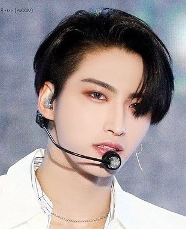

ATEEZ(에이티즈)
Ateez (에이티즈) to ośmioosobowy, południowokoreańśki boysband,który zadebiutował 24 paździenika
z piosenką "Pirate King" oraz minialbumem "Treasure EP. 1: All To Zero",pod skrzydłami
wytwórni KQ Entertainment. Nazwa ich oficjalnego fanklubu to Atiny (ATEEZ + Destiny).
" 8 Makes 1 Team "
CZŁONKOWIE
HONGJOONG
Pełne imię i nazwisko: Kim Hong Joong
Data urodzenia:07.11.1998
Wzrost: 172cm
Pozycja w zespole: lider, raper, kompozytor
Cechy szczególne: małe rączki
SEONGHWA

Pełne imię i nazwisko: Park Seong Hwa
Data urodzenia: 03.04.1998
Wzrost: 178cm
Pozycja w zespole: wokaista, visual
Cechy szczególne: disgusted face
YUNHO